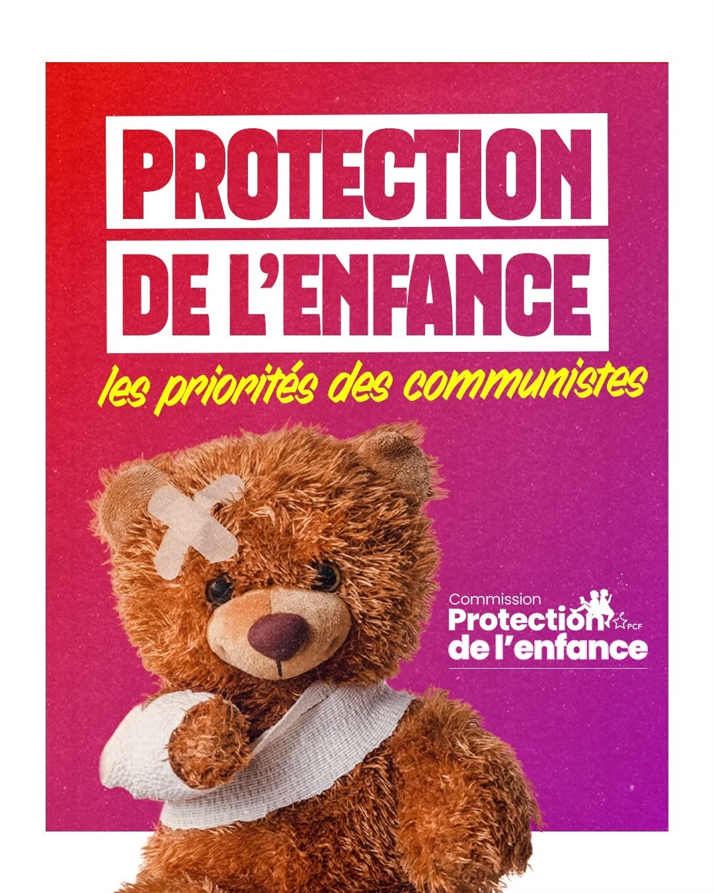
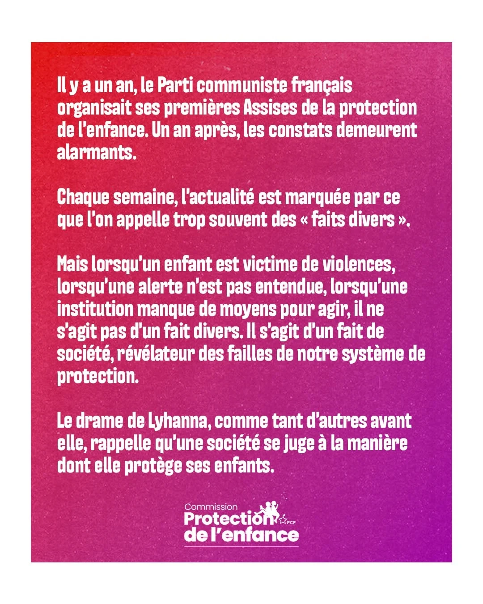
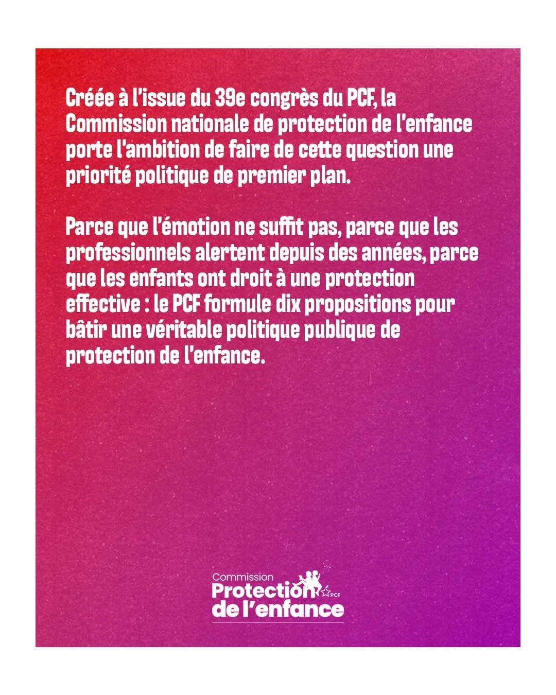
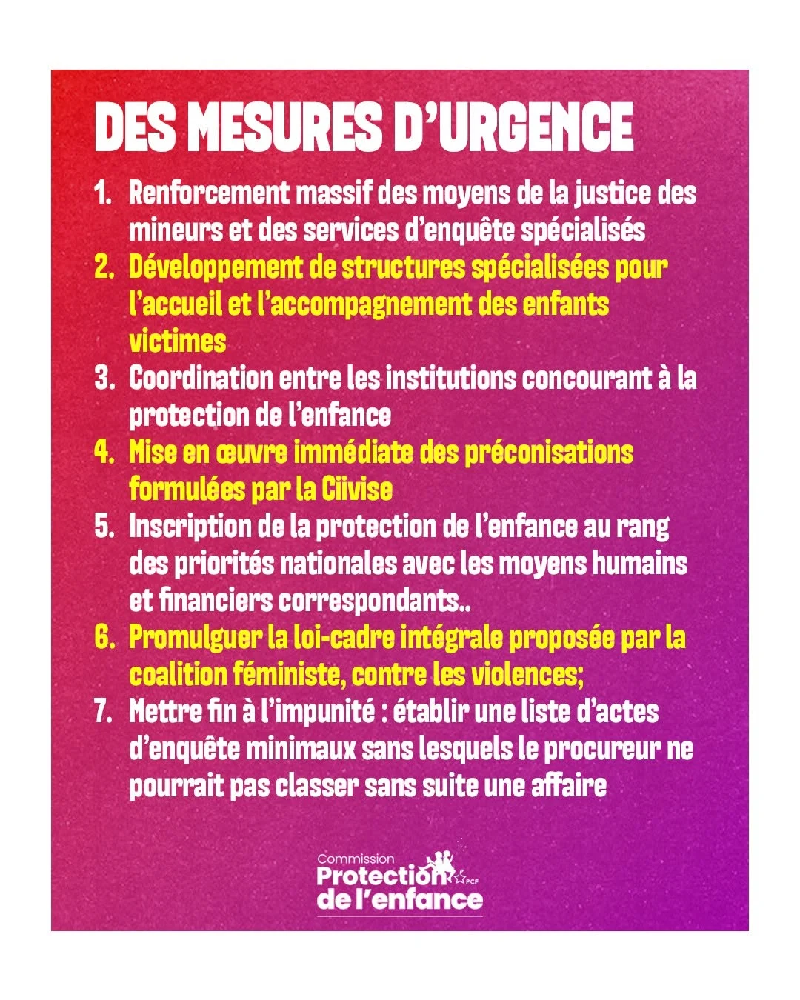

Publication relayée par le PCF 79
Le PCF demande des moyens pour la protection de l’enfance
Date de mise à jour indiquée par Facebook · 11 juin 2026
Texte de la publication · PCF national et PCF – Protection de l’enfance
🧸 La mort de Lyhanna, 11 ans, est un drame qui nous bouleverse profondément. Nos pensées vont à sa famille, à ses proches et à toutes celles et ceux que cette tragédie frappe aujourd'hui.
Mais l'émotion ne suffit pas.
L'affaire Lyhanna rappelle avec force qu'une société se juge à la manière dont elle protège ses enfants. Lorsque les alertes s'accumulent, lorsque les institutions manquent de moyens pour agir, lorsque la protection des enfants n'est plus assurée, nous sommes face à un échec collectif qui appelle des réponses politiques à la hauteur.
Le Parti communiste français fait de la protection de l'enfance une priorité de premier plan. Parce que protéger les enfants ne peut pas être un slogan : cela exige une volonté politique et des moyens concrets.




Sources
PCF national et PCF – Protection de l’enfance · publication relayée par le PCF 79 · bibliothèque Facebook · AR-0002-FB-00757
À lire aussi · Affaire Lyhanna, le PCF demande des moyens pour protéger les enfants